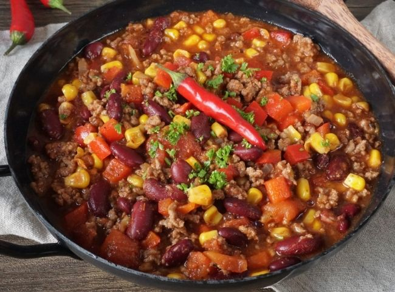

Chilli con Carne
Zubereitung
1. Rapsöl in einen breiten Topf geben sobald dieser heiß ist. Anschließend das Rinderhackfleisch in kleinen Portionen hinzufügen. Das Hackfleisch vorsichtig anbraten, aber nicht zu viel rühren ,damit das Fleisch seine leckeren Röstaromen entwickeln kann.
2. Zwiebeln und Knoblauchzehen fein würfeln und in einen Topf geben.Das Tomatenmark mit anrösten.
3. Mit Salz, Pfeffer, Kreuzkümmel und Zimt würzen.
4. Alles mit Gemüse- oder Rinderbrühe ablöschen, gerade so, dass der Boden Bedekt ist.
5. Die stückigen Tomaten aus der Dose hinzugeben.
6. Die Habanero-Chili vom Kerngehäuse trennen und fein würfeln.Die Chili-Schote in feine Ringe schneiden und beides in den Topf geben.Jetzt alles für 2 Stunden köcheln lassen.
7. Die Paprikaschote würfeln und den Mais und die Kidney-Bohnen abspülen.Das Gemüse anschließend zu den anderen Zutaten in den Topf geben und für 20 Minuten kochen.
8. Ein Stück Zartbitter-Schokolade raspeln und ebenfalls in den Topf geben.
Kleiner Tipp: Am besten schmekt das Chili aufgewärmt am nächsten Tag.
Guten Appetit!